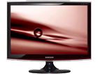
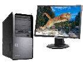
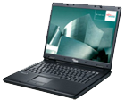

Chercher le quinze
| Imaginez la beauté au-delé de vos réves L’art n’est pas quelque chose que nous pouvons mesurer. Chez Samsung, nous pensons que l’art est le résultat d’un équilibre entre un design raffiné |
Clé USB 2.0 Zmate Pen Small 2048 Mo Caractéristiques : Température de fonctionnement : entre 0éC et 50éC
Capacité : 2048 Mo
|
Un ordinateur de bureau simple à utiliser, à un petit prix |
Fudjisi Siemens Ordinateur Portable Amilo Li 2727-15 P5610 - Intel Celeron M 560 (2,13 GHz) - Ecran |
 |
 |
 |